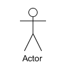

需求分析
1. 定义
将用户非形式的需求表述转化为完整的需求定义，从而确定系统必须做什么的过程。
注意区分用户提出的问题是原始需求(用户需求)，会存在冲突或缺乏可行性的需求，经过需求分析后，形成为<<需求规格说明书>>,需求各组成部分的形成过程见下图1-1
如何收集用户需求可参考相关文档等。

2. 需求分析过程
graph LR
REG[问题识别] --> ANY[细化\分析] --> DOC[需求规格说明书] --> JUDGE[评审]
2.1 问题识别
明确功能需求(做什么)、性能需求(要达到什么指标)、环境需求(如机型、操作系统等)、可靠性需求(不发生故障的概率）、安全保密需求、用户界面需求、资源使用需求(软件运行是所需的内存、CPU等)、软件成本消耗与开发进度需求、预先估计以后系统可能达到的目标。 
可归纳为：确定业务规则、功能需求、非功能需求、质量属性(五可六性)、系统约束(时间、预算、技术、人员、组织等)；确立各需求优先级；输出物为部分SRS内容(如需求清单等)
2.2 需求分析1
整体的系统分析主要借助{业务流程图},进行需求细化时用到的主要方法有:
-
功能分解方法：功能分解——功能、子功能、功能接口。
-
结构化分析方法 ：使用数据流图和数据词典

-
信息建模方法：常用于数据库管理系统，实体和关系图(ER图)为主要工具
-
面向对象的分析方法 : 使用用例图(User case)、类图、时序图等工具
2.3 编制需求规格说明书(SRS)
输出需求分析阶段性成果。详见第3部分
2.4 评审/验证SRS
对功能需求的正确性（一致性），完整性和清晰性，以及其它需求给予评价（此部分略）。
3. 编写 SRS
1). 确认角色-场景-需求 2). 绘制业务流程图、界面原型图 3). 根据业务流程图编制用例图 4). 编写功能需求项(通常为表格，含功能项、优先级、说明等)、非功能需求部分、风险(可选)等 5). 完成类图、时序图(*存疑，属设计阶段产物)
3.1 绘制业务流程图
exp 1.购物流程图单用户

exp 2跨职能流程图 多个角色（可参考OA报销流程图)


3.2 绘制用例图2
-
角色（actor）:直接或间接使用这个系统的用户或系统、设备|也可能是客户端，业务系统

-
用例（use case）：角色能够执行的动作，表示系统的功能；如用户注册、添加购物车、支付等等。
-
include ：一个用例（基础用例）包含另一个用例（新增用例）的场景。类似于在过程设计语言中，将程序的某一段算法封装成一个子过程，然后再从主程序中调用这一子过程。

-
extends：独立并且可选的动作，扩展用例可以访问基用例的属性，因此它能根据基用例中扩展点的当前状态来判断是否执行自己。但是扩展用例对基用例不可见

3.3 识别风险
需求分析还包含风险识别，需求相关风险有：